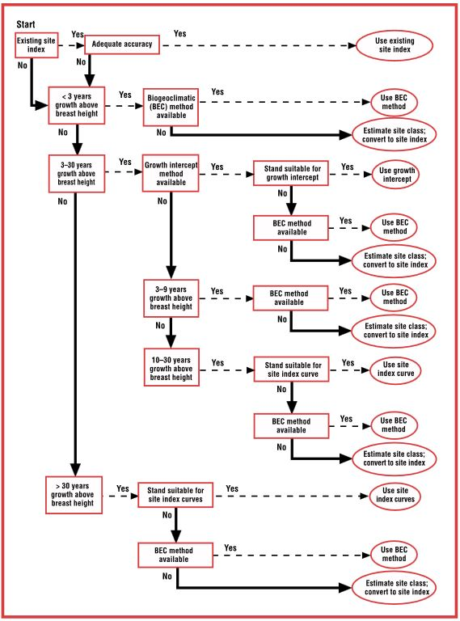

The three (3) most common tools for estimating Site index in BC are:
The first two are known as direct methods because they require tree data for input. SIBEC is an indirect method used when suitable site trees are not available. Direct methods are preferred over indirect.
Selection of the most appropriate model for a given situation depends on:
Level of accuracy required (e.g., stand- vs. forest-level planning)
Model availability for the target species
Availability of suitable, model-specific data
